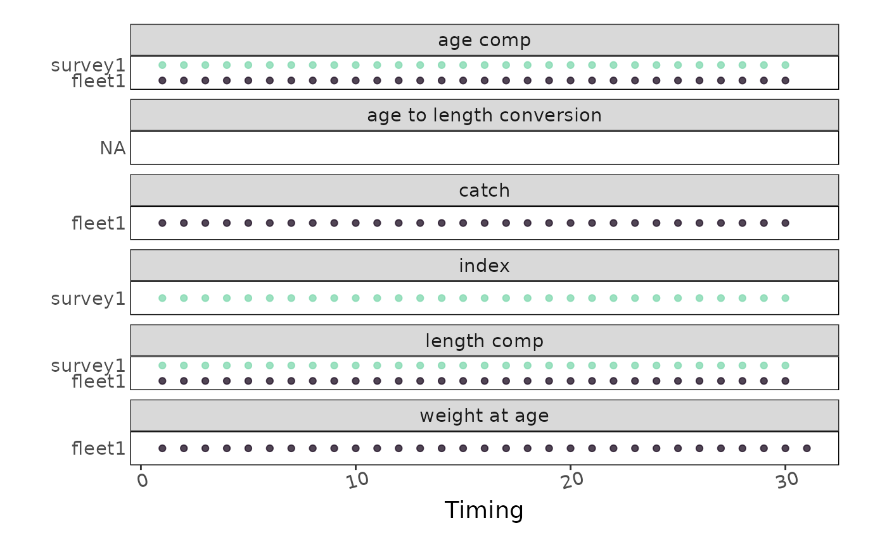
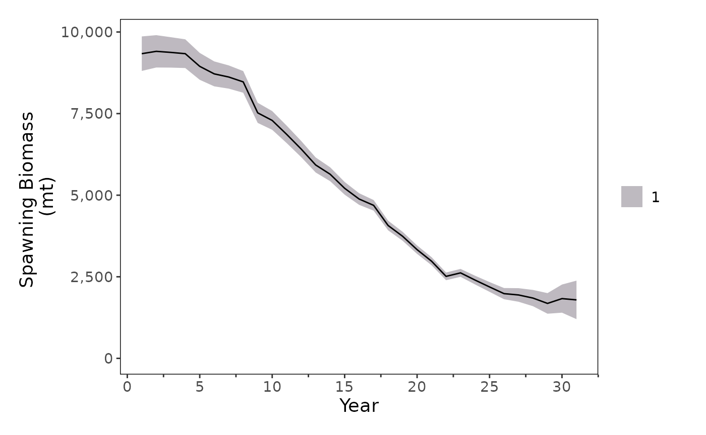
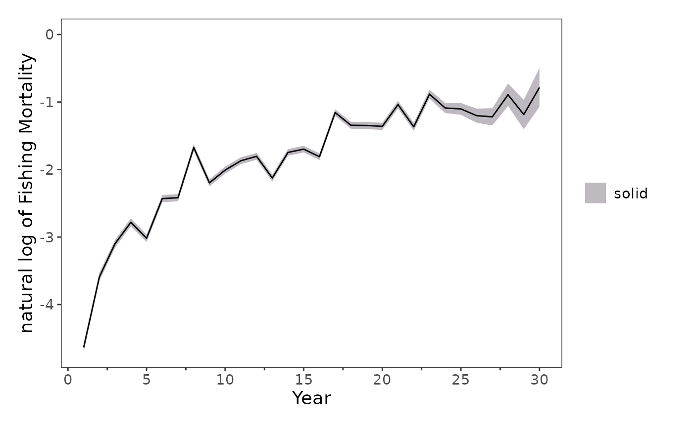
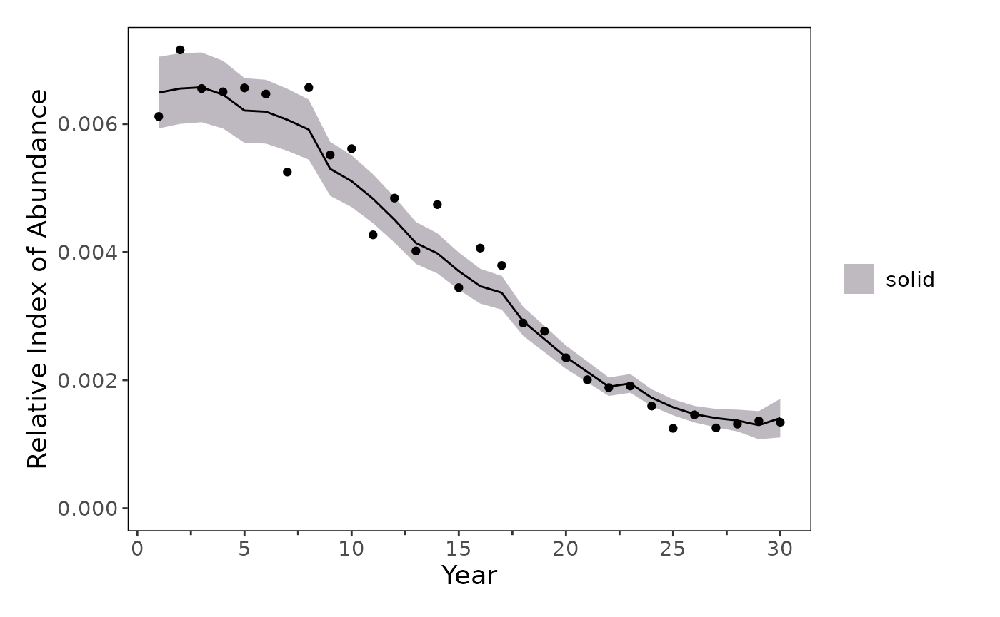
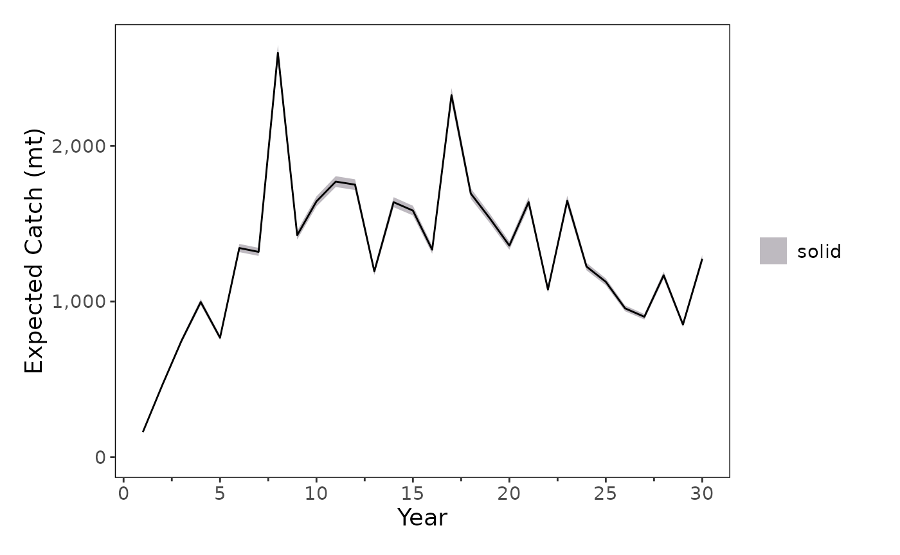
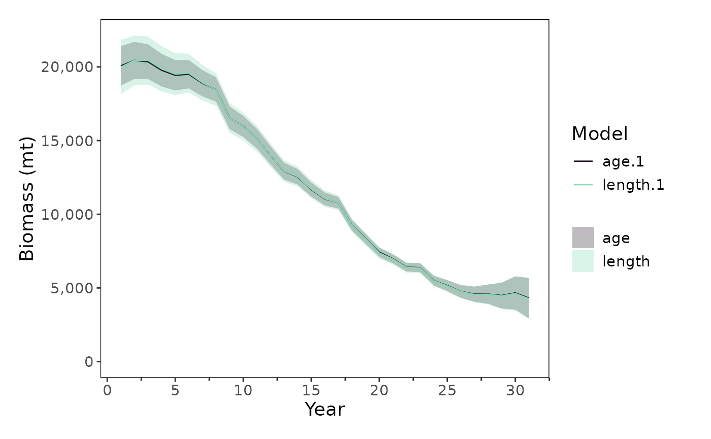

Introducing the Fisheries Integrated Modeling System (FIMS)
Source:vignettes/fims-demo.Rmd
fims-demo.RmdFIMS
The NOAA Fisheries Integrated Modeling System (FIMS) is a new modeling framework for fisheries modeling. The framework is designed to support next-generation fisheries stock assessment, ecosystem, and socioeconomic modeling. It is important to note that FIMS itself is not a model but rather a framework for creating models. The framework is made up of many modules that come together to create a model that best suits the needs of the end-user. The remainder of this vignette walks through what is absolutely necessary to run a FIMS catch-at-age model using the default settings.
Loading the package
Calling library(FIMS) loads the R package, Rcpp
functions, and Rcpp modules into the R environment.
Getting help
In addition to using the traditional method of getting help within R
for functions, i.e., ?FIMS::fit_fims, you can use
methods::show() to access help information for the C++
functions that are exported via {Rcpp}. You will either be provided with
a short description of the function or a link to the doxygen
documentation for the C++ code that will provide information about the
function.
For example, CreateTMBModel is a C++ function that
returns a boolean.
Data
Data for a FIMS model must be stored in a single data frame using a
long format, e.g., data("data_big", package = "FIMS"). The
design is similar to running a linear model where you pass a single data
frame to lm().
The long format does lead to some information being duplicated. For
example, the units are listed for every row rather than stored in a
single location for each data type. But, the long format facilitates
using tidy functions to manipulate the data. And, a single function,
i.e., FIMSFrame(), is all that is needed to prepare the
data to be used in a FIMS model.
data_big
A sample data frame for a catch-at-age model with both ages and
lengths is stored in the package as data_big. This data set
is based on data that was used in Li et al. for the
Model Comparison Project (github
site). The length data have since been added data-raw/data_big.R
based on an age-length conversion matrix.
To see how this example data frame was created, see the R script here
R/data_big.R.
To find out more about the columns that are present use
?data_big.
FIMSFrame()
Once you have a long data frame, you can pass it to
FIMSFrame() to prepare your data for a FIMS model. This
function performs several validation checks and returns an object with
the FIMSFrame class. The FIMSFrame class is
set up using the S4 structure (more information on S4 can be found here).
# Bring the package data into your environment
data("data_big")
# Prepare the package data for being used in a FIMS model
data_4_model <- FIMSFrame(data_big)There are helper functions for working with objects that have the
FIMSFrame class, e.g., get_data(),
get_n_years(), get_*(). Additionally, there
are helper functions for pulling data out of the class in the format
needed for a module, i.e., a vector, but these m_*()
functions. These m_*() functions will not be explored in
this vignette because they are largely meant to be used by power users
to manually set up FIMS modules.
The data_4_model object contains many slots (i.e., named
components of the object that can be accessed) but perhaps the most
interesting one is the long data frame stored in the “data” slot. This
tibble can be accessed using get_data().
# Use show() to see what is stored in the FIMSFrame S4 class
methods::show(data_4_model)## tbl_df of class 'FIMSFrame'## with the following 'types': age_comp, catch, length_comp, weight_at_age, index, age_to_length_conversion## Found more than one class "tbl_df" in cache; using the first, from namespace 'FIMS'## Also defined by 'tibble'## Found more than one class "tbl_df" in cache; using the first, from namespace 'FIMS'## Also defined by 'tibble'## # A tibble: 6 × 8
## type fleet age length timing observed unit uncertainty
## <chr> <chr> <int> <dbl> <dbl> <dbl> <chr> <chr>
## 1 age_comp fleet1 1 NA 1 0.07 proportion ~ dmultinom(prob = ag…
## 2 age_comp fleet1 2 NA 1 0.1 proportion ~ dmultinom(prob = ag…
## 3 age_comp fleet1 3 NA 1 0.115 proportion ~ dmultinom(prob = ag…
## 4 age_comp fleet1 4 NA 1 0.15 proportion ~ dmultinom(prob = ag…
## 5 age_comp fleet1 5 NA 1 0.1 proportion ~ dmultinom(prob = ag…
## 6 age_comp fleet1 6 NA 1 0.05 proportion ~ dmultinom(prob = ag…
## additional slots include the following:fleets:
## [1] "fleet1" "survey1"
## n_years:
## [1] 30
## ages:
## [1] 1 2 3 4 5 6 7 8 9 10 11 12
## n_ages:
## [1] 12
## lengths:
## [1] 0 50 100 150 200 250 300 350 400 450 500 550 600 650 700
## [16] 750 800 850 900 950 1000 1050 1100
## n_lengths:
## [1] 23
## start_year:
## [1] 1
## end_year:
## [1] 30
# Or, look at the structure using str()
# Increase max.level to see more of the structure
str(data_4_model, max.level = 1)## Formal class 'FIMSFrame' [package "FIMS"] with 9 slots
# Use dplyr to subset the data for just the catch
get_data(data_4_model) |>
dplyr::filter(type == "catch")## # A tibble: 30 × 8
## type fleet age length timing observed unit uncertainty
## <chr> <chr> <int> <dbl> <dbl> <dbl> <chr> <chr>
## 1 catch fleet1 NA NA 1 162. mt ~ dlnorm(meanlog = log_catch…
## 2 catch fleet1 NA NA 2 461. mt ~ dlnorm(meanlog = log_catch…
## 3 catch fleet1 NA NA 3 747. mt ~ dlnorm(meanlog = log_catch…
## 4 catch fleet1 NA NA 4 997. mt ~ dlnorm(meanlog = log_catch…
## 5 catch fleet1 NA NA 5 768. mt ~ dlnorm(meanlog = log_catch…
## 6 catch fleet1 NA NA 6 1344. mt ~ dlnorm(meanlog = log_catch…
## 7 catch fleet1 NA NA 7 1319. mt ~ dlnorm(meanlog = log_catch…
## 8 catch fleet1 NA NA 8 2598. mt ~ dlnorm(meanlog = log_catch…
## 9 catch fleet1 NA NA 9 1426. mt ~ dlnorm(meanlog = log_catch…
## 10 catch fleet1 NA NA 10 1644. mt ~ dlnorm(meanlog = log_catch…
## # ℹ 20 more rowsThe data contains the following fleets:
- A single fishery fleet with age- and length-composition, weight-at-age, and catch data
- A single survey with age- and length-composition and index data
You can use the base R function plot(data_4_model) to
see the data types (e.g., catch, length composition, age composition,
etc.) in the data_4_model object by fleet.
plot(data_4_model)
FIMS input values by type (panels) and fleet (colors).
Parameters
The parameters that are in the model will depend on which modules are used from the FIMS framework. This combination of modules rather than the use of a control file negates the need for complicated if{} else{} statements in the code.
setup_default_parameters()
Modules that are available in FIMS are known as reference classes in the C++ code. Each reference class acts as an interface between R and the underlining C++ code that defines FIMS. Several reference classes exist and several more will be created in the future. The beauty of having modules rather than a control file really comes out when more reference classes are created because each reference class can be accessed through R by itself to build up a model rather than needing to modify a control file for future features.
By just passing the data to setup_default_parameters(),
the default values for parameters that relate to fleet(s), recruitment,
growth, and maturity modules can be created. For example,
- “BevertonHolt” for the recruitment module
- “Dnorm” distribution for recruitment deviations (log_devs)
- “EWAA” for the Growth module, and
- “Logistic” for Maturity module.
# Set up default parameters based on data
default_parameters <- setup_default_parameters(data = data_4_model)
default_parameters## # A tibble: 474 × 11
## module_name fleet module_type label age length timing value estimation_type
## <chr> <chr> <chr> <chr> <dbl> <dbl> <int> <dbl> <chr>
## 1 Selectivity flee… Logistic infl… NA NA NA 2 fixed_effects
## 2 Selectivity flee… Logistic slope NA NA NA 1 fixed_effects
## 3 Selectivity surv… Logistic infl… NA NA NA 2 fixed_effects
## 4 Selectivity surv… Logistic slope NA NA NA 1 fixed_effects
## 5 Fleet flee… <NA> log_q NA NA NA 0 constant
## 6 Fleet flee… <NA> log_… NA NA 1 -3 fixed_effects
## 7 Fleet flee… <NA> log_… NA NA 2 -3 fixed_effects
## 8 Fleet flee… <NA> log_… NA NA 3 -3 fixed_effects
## 9 Fleet flee… <NA> log_… NA NA 4 -3 fixed_effects
## 10 Fleet flee… <NA> log_… NA NA 5 -3 fixed_effects
## # ℹ 464 more rows
## # ℹ 2 more variables: distribution_type <chr>, distribution <chr>Update parameters
Functions (e.g., rows_*()) from dplyr can
be used to update the default parameters as needed.
In the code below, rows_update() is used to adjust the
fishing mortality, selectivity, maturity, and population parameters from
their default values.
parameters_4_model <- default_parameters |>
# Update log_Fmort initial values for Fleet1
dplyr::rows_update(
tibble::tibble(
fleet = "fleet1",
label = "log_Fmort",
timing = seq(get_n_years(data_4_model)),
value = log(c(
0.009459165, 0.027288858, 0.045063639,
0.061017825, 0.048600752, 0.087420554,
0.088447204, 0.186607929, 0.109008958,
0.132704335, 0.150615473, 0.161242955,
0.116640187, 0.169346119, 0.180191913,
0.161240483, 0.314573212, 0.257247574,
0.254887252, 0.251462108, 0.349101406,
0.254107720, 0.418478117, 0.345721184,
0.343685540, 0.314171227, 0.308026829,
0.431745298, 0.328030899, 0.499675368
))
),
by = c("fleet", "label", "timing")
) |>
# Update log_q for survey1
dplyr::rows_update(
tibble::tibble(
fleet = "survey1",
label = c("inflection_point", "slope", "log_q"),
value = c(1.5, 2, log(3.315143e-07))
),
by = c("fleet", "label")
) |>
# Update log_devs in the Recruitment module (timing steps 2-30)
dplyr::rows_update(
tibble::tibble(
label = "log_devs",
timing = 2:get_n_years(data_4_model),
value = c(
0.43787763, -0.13299042, -0.43251973, 0.64861200, 0.50640852,
-0.06958319, 0.30246260, -0.08257384, 0.20740372, 0.15289604,
-0.21709207, -0.13320626, 0.11225374, -0.10650836, 0.26877132,
0.24094126, -0.54480751, -0.23680557, -0.58483386, 0.30122785,
0.21930545, -0.22281699, -0.51358369, 0.15740234, -0.53988240,
-0.19556523, 0.20094360, 0.37248740, -0.07163145
)
),
by = c("label", "timing")
) |>
# Update log_sd for log_devs in the Recruitment module
dplyr::rows_update(
tibble::tibble(
module_name = "Recruitment",
label = "log_sd",
value = 0.4
),
by = c("module_name", "label")
) |>
# Update inflection point and slope parameters in the Maturity module
dplyr::rows_update(
tibble::tibble(
module_name = "Maturity",
label = c("inflection_point", "slope"),
value = c(2.25, 3)
),
by = c("module_name", "label")
) |>
# Update log_init_naa values in the Population module
dplyr::rows_update(
tibble::tibble(
label = "log_init_naa",
age = seq(get_n_ages(data_4_model)),
value = c(
13.80944, 13.60690, 13.40217, 13.19525, 12.98692, 12.77791,
12.56862, 12.35922, 12.14979, 11.94034, 11.73088, 13.18755
)
),
by = c("label", "age")
)Fit
With data and parameters in place, we can now initialize modules
using initialize_fims() and fit the model using
fit_fims().
initialize_fims()
The tibble returned by setup_default_parameters() is
just a data frame containing specifications. Nothing has been created in
memory as of yet. To actually initialize the modules,
initialize_fims() needs to be called. This function takes
all of the specifications and matches them with the appropriate data to
initialize a module and create the pointers to the memory.
fit_fims()
The list returned from initialize_fims() can be passed
to the parameter of fit_fims() called input to
run a FIMS model. If optimize = FALSE, the model will not
actually be optimized but instead just checked to ensure it is a viable
model. When optimize = TRUE, the model will be fit using
stats::nlminb() and an object of the class
FIMSFit will be returned.
Example
# Run the model without optimization to help ensure a viable model
test_fit <- parameters_4_model |>
initialize_fims(data = data_4_model) |>
fit_fims(optimize = FALSE)
clear()
# Run the model with optimization
fit <- parameters_4_model |>
initialize_fims(data = data_4_model) |>
fit_fims(optimize = TRUE)## ✔ Starting optimization ...
## ℹ Restarting optimizer 3 times to improve gradient.
## ℹ Maximum gradient went from 0.00394 to 0.00098 after 3 steps.
## ✔ Finished optimization
## ✔ Finished sdreport
## ℹ FIMS model version: 0.10.0.9000
## ℹ Total run time was 1.31952 minutes
## ℹ Number of parameters: fixed_effects=49, random_effects=29, and total=78
## ℹ Maximum gradient= 0.00098
## ℹ Negative log likelihood (NLL):
## • Marginal NLL= 3231.25994
## • Total NLL= 3164.83637
## ℹ Terminal SB= 1791.60147Logging system
You can look at the log file in R or write it to the disk but you
must run get_log() before you run clear to obtain
information about the model because clear removes everything from
memory, including the log. get_log() returns the log
information as a string. This string can be manipulated into a data
frame using jsonlite::fromJSON(). There are three logging
levels, “info”, “warning”, and “error”. The log below will not have any
error messages but if you were to have error messages and you want to
know immediately upon the first error that there are problems, you can
run set_log_throw_on_error(TRUE) prior to running your
model. See the vignette on FIMS logging
or the doxygen
documentation for more information.
log_json_string <- get_log()
log_data_frame <- jsonlite::fromJSON(log_json_string)
log_data_frame[1, ]## timestamp level
## 1 Tue Sep 1 17:08:04 2026 warning
## message id
## 1 The log_f_multiplier vector is not of size n_years. Filling with zeros. 0
## user wd
## 1 runner /home/runner/work/FIMS/FIMS/vignettes
## file
## 1 /home/runner/work/FIMS/FIMS/inst/include/interface/rcpp/rcpp_objects/rcpp_population.hpp
## routine
## 1 bool PopulationInterface::add_to_fims_tmb_internal() [with Type = double]
## line
## 1 440
dim(log_data_frame)## [1] 127 9
# Print how many log entries there are of each type
dplyr::count(log_data_frame, level)## level n
## 1 info 125
## 2 warning 2
# Subset for just the warnings
log_data_frame |> dplyr::filter(level == "warning")## timestamp level
## 1 Tue Sep 1 17:08:04 2026 warning
## 2 Tue Sep 1 17:08:04 2026 warning
## message id
## 1 The log_f_multiplier vector is not of size n_years. Filling with zeros. 0
## 2 Setting spawning_biomass_ratio vector to size n_years + 1. 1
## user wd
## 1 runner /home/runner/work/FIMS/FIMS/vignettes
## 2 runner /home/runner/work/FIMS/FIMS/vignettes
## file
## 1 /home/runner/work/FIMS/FIMS/inst/include/interface/rcpp/rcpp_objects/rcpp_population.hpp
## 2 /home/runner/work/FIMS/FIMS/inst/include/interface/rcpp/rcpp_objects/rcpp_population.hpp
## routine
## 1 bool PopulationInterface::add_to_fims_tmb_internal() [with Type = double]
## 2 bool PopulationInterface::add_to_fims_tmb_internal() [with Type = double]
## line
## 1 440
## 2 456
clear()The results can be plotted with either base R, {ggplot2}, or {stockplotr}. Where, we recommend using {stockplotr} where possible.
# Temporary manipulation to the returned estimates to get them
# to work with stockplotr
output <- get_estimates(fit) |>
dplyr::mutate(
uncertainty_label = "se",
year = year_i,
estimate = estimated
)
stockplotr::plot_spawning_biomass(
dplyr::filter(output, label == "spawning_biomass")
) +
stockplotr::theme_noaa()
stockplotr::plot_timeseries(
stockplotr::filter_data(
output |> dplyr::filter(module_id == 1),
label_name = "log_Fmort$",
geom = "line"
),
x = "year",
y = "estimate",
ylab = "natural log of Fishing Mortality"
) +
stockplotr::theme_noaa()## ℹ Estimates are negative.## ℹ If estimates were log-transformed, please update the y axis label for accuracy.## ℹ Example: log(natural log of Fishing Mortality)
stockplotr::plot_timeseries(
stockplotr::filter_data(
output |> dplyr::filter(module_id == 2),
label_name = "^index_expected$",
geom = "line"
),
x = "year",
y = "estimate",
ylab = "Relative Index of Abundance"
) +
ggplot2::geom_point(
data = data.frame(
observed = model_index(data_4_model, "survey1"),
expected = get_report(fit)[["index_expected"]][[2]],
year = get_start_year(data_4_model):get_end_year(data_4_model)
),
ggplot2::aes(x = year, y = observed)
) +
stockplotr::theme_noaa()
stockplotr::plot_timeseries(
stockplotr::filter_data(
output |> dplyr::filter(module_id == 1),
label_name = "^catch_expected$",
geom = "line"
),
x = "year",
y = "estimate",
ylab = "Expected Catch (mt)"
) +
stockplotr::theme_noaa()
Sensitivities
Multiple fits, i.e., sensitivity runs, can be set up by modifying the
parameter list using dplyr::mutate() or changing the data
that is used to fit the model.
Initial values
For example, one could change the initial value used for the slope of the logistic curve for the survey to see if the terminal estimate changes due to changes to the initial value.
parameters_high_slope <- parameters_4_model |>
# Update the slope value of the logistic selectivity for the survey
dplyr::mutate(
value = dplyr::if_else(
module_name == "Selectivity" &
fleet == "survey1" &
label == "slope",
2.5,
value
)
)
parameters_low_slope <- parameters_4_model |>
dplyr::mutate(
value = dplyr::if_else(
module_name == "Selectivity" &
fleet == "survey1" &
label == "slope",
1,
value
)
)
high_slope_fit <- parameters_high_slope |>
initialize_fims(data = data_4_model) |>
fit_fims(optimize = TRUE)## ✔ Starting optimization ...
## ℹ Restarting optimizer 3 times to improve gradient.
## ℹ Maximum gradient went from 0.00516 to 3e-04 after 3 steps.
## ✔ Finished optimization
## ✔ Finished sdreport
## ℹ FIMS model version: 0.10.0.9000
## ℹ Total run time was 1.24183 minutes
## ℹ Number of parameters: fixed_effects=49, random_effects=29, and total=78
## ℹ Maximum gradient= 3e-04
## ℹ Negative log likelihood (NLL):
## • Marginal NLL= 3231.25994
## • Total NLL= 3164.83637
## ℹ Terminal SB= 1791.59107
clear()
low_slope_fit <- parameters_low_slope |>
initialize_fims(data = data_4_model) |>
fit_fims(optimize = TRUE)## ✔ Starting optimization ...
## ℹ Restarting optimizer 3 times to improve gradient.
## ℹ Maximum gradient went from 0.00353 to 0.00057 after 3 steps.
## ✔ Finished optimization
## ✔ Finished sdreport
## ℹ FIMS model version: 0.10.0.9000
## ℹ Total run time was 1.27943 minutes
## ℹ Number of parameters: fixed_effects=49, random_effects=29, and total=78
## ℹ Maximum gradient= 0.00057
## ℹ Negative log likelihood (NLL):
## • Marginal NLL= 3231.25994
## • Total NLL= 3164.83637
## ℹ Terminal SB= 1791.58654
clear()Age-specific selectivity
One could also change the default selectivity configuration for the survey, update default parameterization, and evaluate the ability to estimate a small number of age-specific parameter values.
# Update "survey1" selectivity from "Logistic" to "AgeSpecificSelectivity"
# This function is also used by setup_default_parameters()
age_specific_selectivity_default <- setup_default_Selectivity(
data = data_4_model,
fleet = "survey1",
module_type = "AgeSpecific"
)
age_specific_selectivity_default## # A tibble: 12 × 11
## module_name fleet module_type label age length timing value estimation_type
## <chr> <chr> <chr> <chr> <int> <dbl> <int> <dbl> <chr>
## 1 Selectivity surv… AgeSpecific logi… 1 NA NA -1 fixed_effects
## 2 Selectivity surv… AgeSpecific logi… 2 NA NA 0 fixed_effects
## 3 Selectivity surv… AgeSpecific logi… 3 NA NA 1 fixed_effects
## 4 Selectivity surv… AgeSpecific logi… 4 NA NA 2.00 fixed_effects
## 5 Selectivity surv… AgeSpecific logi… 5 NA NA 3.00 fixed_effects
## 6 Selectivity surv… AgeSpecific logi… 6 NA NA 4 fixed_effects
## 7 Selectivity surv… AgeSpecific logi… 7 NA NA 5.00 fixed_effects
## 8 Selectivity surv… AgeSpecific logi… 8 NA NA 6.00 fixed_effects
## 9 Selectivity surv… AgeSpecific logi… 9 NA NA 7.00 fixed_effects
## 10 Selectivity surv… AgeSpecific logi… 10 NA NA 8.00 fixed_effects
## 11 Selectivity surv… AgeSpecific logi… 11 NA NA 9.00 fixed_effects
## 12 Selectivity surv… AgeSpecific logi… 12 NA NA 10.0 constant
## # ℹ 2 more variables: distribution_type <chr>, distribution <chr>
parameters_age_specific_selectivity <- parameters_4_model |>
dplyr::filter(!(fleet == "survey1" & module_name == "Selectivity")) |>
dplyr::bind_rows(age_specific_selectivity_default)
# Look at updated default parameters
parameters_age_specific_selectivity |>
dplyr::filter(fleet == "survey1", module_name == "Selectivity") |>
dplyr::select(module_type, fleet, label, age, value, estimation_type)## # A tibble: 12 × 6
## module_type fleet label age value estimation_type
## <chr> <chr> <chr> <dbl> <dbl> <chr>
## 1 AgeSpecific survey1 logit_sel_at_age 1 -1 fixed_effects
## 2 AgeSpecific survey1 logit_sel_at_age 2 0 fixed_effects
## 3 AgeSpecific survey1 logit_sel_at_age 3 1 fixed_effects
## 4 AgeSpecific survey1 logit_sel_at_age 4 2.00 fixed_effects
## 5 AgeSpecific survey1 logit_sel_at_age 5 3.00 fixed_effects
## 6 AgeSpecific survey1 logit_sel_at_age 6 4 fixed_effects
## 7 AgeSpecific survey1 logit_sel_at_age 7 5.00 fixed_effects
## 8 AgeSpecific survey1 logit_sel_at_age 8 6.00 fixed_effects
## 9 AgeSpecific survey1 logit_sel_at_age 9 7.00 fixed_effects
## 10 AgeSpecific survey1 logit_sel_at_age 10 8.00 fixed_effects
## 11 AgeSpecific survey1 logit_sel_at_age 11 9.00 fixed_effects
## 12 AgeSpecific survey1 logit_sel_at_age 12 10.0 constant
# Update the age-specific selectivity parameterization to facilitate estimation
# Values for first two ages are set to generic initial values and estimated
# using "fixed_effects"
# Other values are fixed to true approximate values used in generating demo data
parameters_age_specific_selectivity <- parameters_age_specific_selectivity |>
dplyr::rows_update(
tibble::tibble(
fleet = "survey1",
label = "logit_sel_at_age",
age = seq(get_n_ages(data_4_model)),
value = c(
0, 0, 2.999999, 4.999993, 6.999946,
8.999956, 11.000085, 12.982599, 15.019483, 18.420681,
18.420681, 18.420681
),
estimation_type = c(rep("fixed_effects", 2), rep("constant", 10))
),
by = c("fleet", "label", "age")
)
# Run the model and look at estimated parameter values
# True parameter values for the first two ages are -1 and 1, respectively
age_specific_selectivity_fit <- parameters_age_specific_selectivity |>
initialize_fims(data = data_4_model) |>
fit_fims(optimize = TRUE)## ✔ Starting optimization ...
## ℹ Restarting optimizer 3 times to improve gradient.
## ℹ Maximum gradient went from 0.01095 to 0.00033 after 3 steps.
## ✔ Finished optimization
## ✔ Finished sdreport
## ℹ FIMS model version: 0.10.0.9000
## ℹ Total run time was 1.25123 minutes
## ℹ Number of parameters: fixed_effects=49, random_effects=29, and total=78
## ℹ Maximum gradient= 0.00033
## ℹ Negative log likelihood (NLL):
## • Marginal NLL= 3231.29832
## • Total NLL= 3164.88132
## ℹ Terminal SB= 1791.01536
get_estimates(age_specific_selectivity_fit) |>
dplyr::filter(module_name == "Selectivity", module_type == "AgeSpecific")## # A tibble: 12 × 24
## module_name module_id module_type label type type_id parameter_id fleet
## <chr> <int> <chr> <chr> <chr> <int> <int> <chr>
## 1 Selectivity 2 AgeSpecific logit_sel… vect… 31 364 <NA>
## 2 Selectivity 2 AgeSpecific logit_sel… vect… 31 365 <NA>
## 3 Selectivity 2 AgeSpecific logit_sel… vect… 31 366 <NA>
## 4 Selectivity 2 AgeSpecific logit_sel… vect… 31 367 <NA>
## 5 Selectivity 2 AgeSpecific logit_sel… vect… 31 368 <NA>
## 6 Selectivity 2 AgeSpecific logit_sel… vect… 31 369 <NA>
## 7 Selectivity 2 AgeSpecific logit_sel… vect… 31 370 <NA>
## 8 Selectivity 2 AgeSpecific logit_sel… vect… 31 371 <NA>
## 9 Selectivity 2 AgeSpecific logit_sel… vect… 31 372 <NA>
## 10 Selectivity 2 AgeSpecific logit_sel… vect… 31 373 <NA>
## 11 Selectivity 2 AgeSpecific logit_sel… vect… 31 374 <NA>
## 12 Selectivity 2 AgeSpecific logit_sel… vect… 31 375 <NA>
## # ℹ 16 more variables: year_i <int>, age_i <int>, length_i <int>, input <dbl>,
## # estimated <dbl>, expected <dbl>, observed <dbl>, estimation_type <chr>,
## # uncertainty <dbl>, distribution <chr>, input_type <chr>, lpdf <dbl>,
## # likelihood <dbl>, log_sd <dbl>, log_like_cv <dbl>, gradient <dbl>
clear()Age only
The same model can be fit to just the age data, removing the length-composition configurations.
# and fit the model
age_only_fit <- parameters_4_model |>
initialize_fims(data = get_data(data_4_model) |>
dplyr::filter(!type %in% c("length_comp", "age_to_length_conversion"))) |>
fit_fims(optimize = TRUE)## Found more than one class "tbl_df" in cache; using the first, from namespace 'FIMS'## Also defined by 'tibble'## Found more than one class "tbl_df" in cache; using the first, from namespace 'FIMS'## Also defined by 'tibble'## Found more than one class "tbl_df" in cache; using the first, from namespace 'FIMS'## Also defined by 'tibble'## Found more than one class "tbl_df" in cache; using the first, from namespace 'FIMS'## Also defined by 'tibble'## Found more than one class "tbl_df" in cache; using the first, from namespace 'FIMS'## Also defined by 'tibble'## Found more than one class "tbl_df" in cache; using the first, from namespace 'FIMS'## Also defined by 'tibble'## Found more than one class "tbl_df" in cache; using the first, from namespace 'FIMS'## Also defined by 'tibble'## Found more than one class "tbl_df" in cache; using the first, from namespace 'FIMS'## Also defined by 'tibble'## Found more than one class "tbl_df" in cache; using the first, from namespace 'FIMS'## Also defined by 'tibble'## Found more than one class "tbl_df" in cache; using the first, from namespace 'FIMS'## Also defined by 'tibble'## ✔ Starting optimization ...
## ℹ Restarting optimizer 3 times to improve gradient.
## ℹ Maximum gradient went from 0.0024 to 0.00021 after 3 steps.
## ✔ Finished optimization
## ✔ Finished sdreport
## ℹ FIMS model version: 0.10.0.9000
## ℹ Total run time was 11.85112 seconds
## ℹ Number of parameters: fixed_effects=49, random_effects=29, and total=78
## ℹ Maximum gradient= 0.00021
## ℹ Negative log likelihood (NLL):
## • Marginal NLL= 1627.76704
## • Total NLL= 1564.08529
## ℹ Terminal SB= 1740.95134
clear()Length
The same model can be fit to just the length data, removing the age-composition configurations.
length_only_fit <- parameters_4_model |>
initialize_fims(data = get_data(data_4_model) |>
dplyr::filter(!type %in% c("age_comp"))) |>
fit_fims(optimize = TRUE)## Found more than one class "tbl_df" in cache; using the first, from namespace 'FIMS'## Also defined by 'tibble'## Found more than one class "tbl_df" in cache; using the first, from namespace 'FIMS'## Also defined by 'tibble'## ✔ Starting optimization ...
## ℹ Restarting optimizer 3 times to improve gradient.
## ℹ Maximum gradient went from 0.01122 to 3e-04 after 3 steps.
## ✔ Finished optimization
## ✔ Finished sdreport
## ℹ FIMS model version: 0.10.0.9000
## ℹ Total run time was 1.19994 minutes
## ℹ Number of parameters: fixed_effects=49, random_effects=29, and total=78
## ℹ Maximum gradient= 3e-04
## ℹ Negative log likelihood (NLL):
## • Marginal NLL= 1568.32685
## • Total NLL= 1518.62643
## ℹ Terminal SB= 1722.35617
clear()
stockplotr::plot_biomass(
list(
"age" = get_estimates(age_only_fit) |>
dplyr::mutate(
uncertainty_label = "se",
year = year_i,
estimate = estimated
),
"length" = get_estimates(length_only_fit) |>
dplyr::mutate(
uncertainty_label = "se",
year = year_i,
estimate = estimated
)
)
)